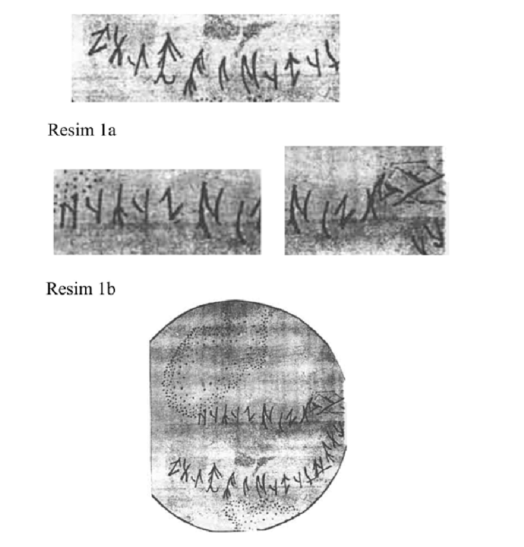

Belge 3. Esik Kurganından Bulunan Yazı

Resim 1a-b: Gümüş çanağın üzerindeki yazı. Esik Kurganı. (K.A. Akişev, Kurgan Issık, Moskva, 1978, res.70.)
Resim 2: Gümüş çanağın üzerindeki yazının K.A. Akişev tarafından yapılmış olan kopyası. Resmi ve kopyası verilen yazı Olcas Süleymanov tarafından "khan uya üç otızı yok boltı Utıgsi tozittı" şeklinde okunmuş ve "Han'ın oğlu yirmi üç yaşında yok oldu (Halkın ?) adı da yok oldu" şeklinde transkripsiyonlanmıştır.[174]